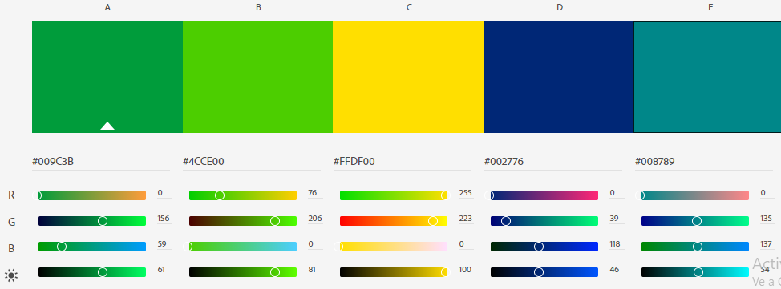

Color Palette
My colors are inspired by the colors of Brazil which are Yellow, Green and Blue, along with two colors that complement them, such as a slightly cooler variation of blue and a more yellowish green. I use these colors because I want the page to be specialized in the climate of Brazil.
